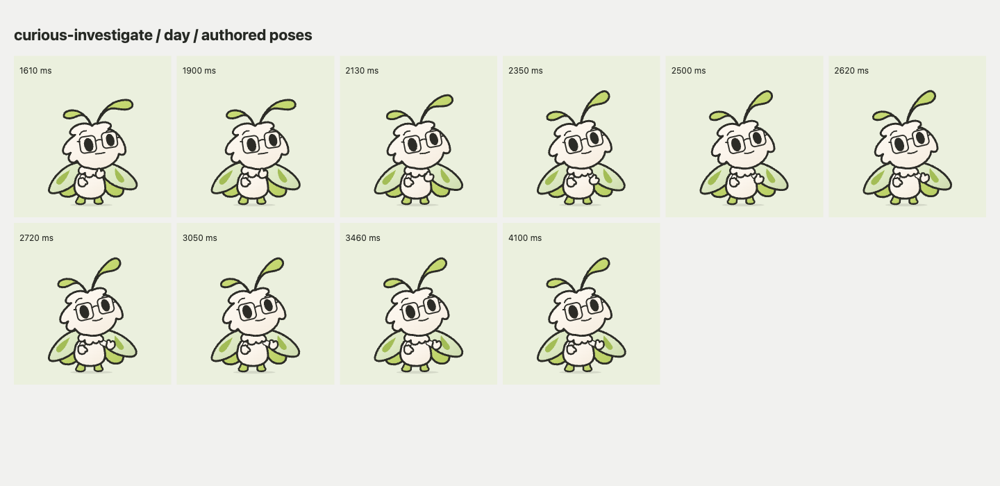
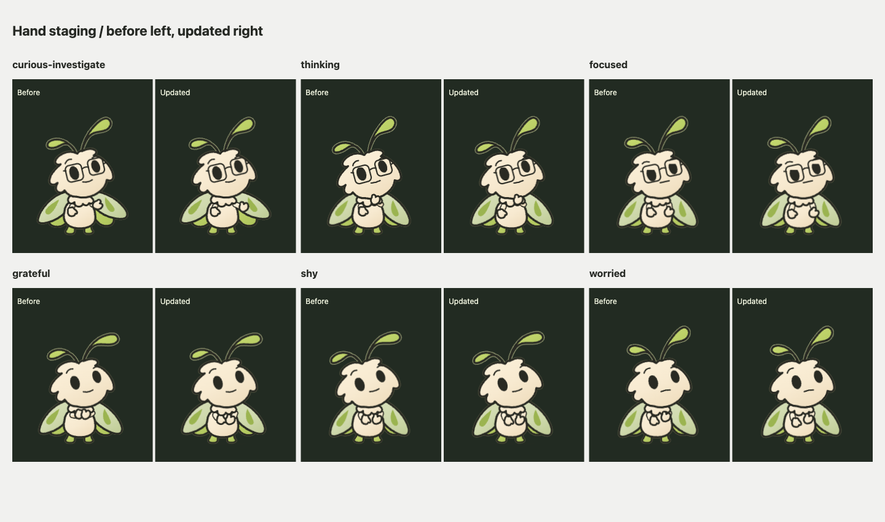
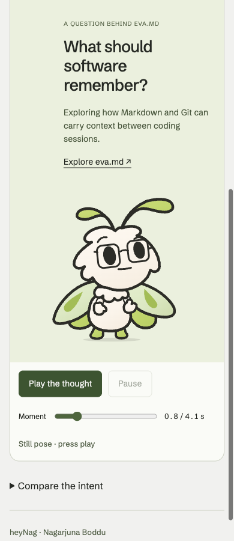
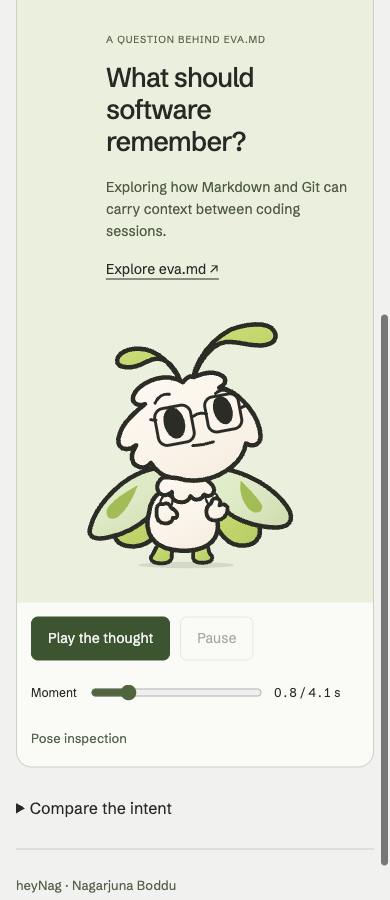

Nag / Hands, attention and character / 7 November 2026
A little more to say.
A tiny offering hand. A glance that finds the question. The same innocent moth, in daylight and after dark.
All 18 specialists accept the implemented local foundation with named limits. The 9/10 target has not been reached across the board.
The gesture comes after the thought.
The moth looks back at you before turning its little mitten upward. The wrist opens away from the ruff over the existing beat; the body, arm length and hand shape stay exactly the same.

Thinking keeps its chin contact and lowers the free hand. Focused rests both hands lower. Grateful retains a small joined clasp; Shy uses a lower, asymmetric pair; Worried separates the hands diagonally. These are changes to posing, not a larger or older character.

Look where the question is.
On phones the question sits above the moth. Its eyes now lead upward, with a small head response following. The reading glance keeps a little movement, then returns to you before the hand opens. On wide layouts the question remains beside it.


The layout is measured when it changes. A paused pose stays still during resize; playback eases toward a new direction. Light and dark share the same pose. The original Curious performance remains unchanged.
The whole collection.
The refreshed film uses the current source for all 24 feelings. The three separate studies remain available in the studio. The focused comparison includes both themes and the measured phone-attention direction in a simplified composition.
These are deterministic 30fps engine exports. They show the authored movement; they do not measure physical-phone performance or establish how unfamiliar visitors interpret it.
Eighteen opinions, with reasons.
Two specialists in each discipline independently reviewed the artwork and implementation, then challenged their partner. All use GPT-6 Astra with ultra reasoning. Each score keeps the same overall local-foundation lens as the prior review; it is an editorial judgment, not an audience result. The target of 9 does not determine the verdict.
| Specialty | Reviewer A | Reviewer B |
|---|---|---|
| Character brand director | 8.5/10 | 8.6/10 |
| Character performance director | 8.8/10 | 8.8/10 |
| Identity systems designer | 8.9/10 | 8.8/10 |
| Technical character animator and rigger | 8.9/10 | 8.8/10 |
| Interaction and accessibility designer | 8.8/10 | 8.7/10 |
| Audience and character-perception researcher | 8.5/10 | 8.6/10 |
| Storyboard, animatic and comic staging director | 8.9/10 | 8.7/10 |
| Visual development and lighting artist | 8.8/10 | 8.8/10 |
| Sound designer | 9.1/10 | 9/10 |
Character brand director
Reviewer A · 8.5/10
Independent brand-craft judgment of the inspected full local foundation. Clearer cup contour and corrected phone attention justify the rise from prior final8.2. Small-size specificity, the tall initial-phone composition and introductory authored content remain meaningful limits. The number is not a measured comprehension result, an animation timing score or a required step toward9.
- The revised upward cup has clearer contour at larger sizes; unaided sharing comprehension or reduced reliance on copy is not established. At96–128px it remains a small accent.
- The specific prior phone-attention mismatch is resolved in source and inspected actual compositions. Continuous target perception and arbitrary future layouts remain unassessed.
- The portrait still places most of the character and Play below the initial phone viewport. This remains a nonblocking tradeoff, not a mandatory above-fold rule or an observed engagement failure.
- The eva.md question is a truthful bridge, while deeper authored specificity awaits a sourced first-person observation or decision. Any result must be verified; this future criterion does not expand the present authorized refinement.
- No normal-speed wrist-turn, replay or comic-timing certification by this reviewer. Films and numeric checks do not substitute for continuous perception.
- No unfamiliar-human emotion comprehension, personal attribution, attachment or delayed recall result; owner preference remains personal fit only.
- Root desktop keyboard Play/Pause/Resume/range evidence is accepted within that scope. Native OS menu commit, spoken screen-reader output, physical phones and GPU performance remain unverified.
- Current day universal-avatar/night-more-room guidance remains inherited. No new crop-recognition failure is claimed.
- No publication, deployment, remote commit/push or identity mutation is included.
Partner challenge and response
Reviewer B · 8.6/10
Up from my prior final 8.4 because the inspected offering contour and phone subject relation improve within the same whole-foundation scope. The unchanged tall introduction, introductory authorship and small-size semantic limits remain; 23 tests and pair agreement do not add craft points.
- No normal-speed continuous-motion judgment by B. Frame evidence cannot determine whether the 2350–2720ms wrist turn feels like a flick or an invitation.
- No unfamiliar-human emotion comprehension, Nag attribution, attachment or delayed recall outcome. Owner choice remains personal-fit evidence; labels and explanations prime interpretation.
- Phone PNGs are real DOM desktop-browser captures at phone widths, not physical-device testing. No new GPU, native-phone touch or spoken-AT validation.
- Root desktop keyboard Play/Pause/Resume and range evidence now supports those specific controls. Native OS select-menu keyboard commit remains a separate unverified path.
- The corrected phone attention does not solve unchanged vertical exposure; most of the figure and Play remain below the initial viewport at the previously inspected phone composition.
- At 96–128px the hand remains a small accent. Clearer contour does not establish self-sufficient invitation meaning.
- Current content remains a truthful introductory project bridge, not a complete verified personal story.
- Existing day universal-avatar and night-more-room guidance remains; no avatar confusion/recall failure is demonstrated.
- The comparison film's phone segment uses measured bearing within simplified composition. Actual DOM screenshots and browser records govern real layout claims.
- Acceptance is local foundation work for continued design, not publication, deployment, remote identity changes, commit/push or a 9/10 certification.
Character performance director
Reviewer A · 8.8/10
Independent same-scope craft score for authored intention,pose relationships,whole-body acting and sampled staging. Cup,quiet-hand hierarchy and phone direction visibly improve the prior8.4 foundation; tiny-size invitation specificity and optional wry subtlety remain. Unseen continuous feel and human/hardware outcomes are unscored.
- At96–128px the cup and inner hand relationships remain small contour accents. Visible pose distinctions do not establish reliable emotion or invitation recognition at that size.
- The optional wry facial afterthought remains subtle. Mischievous as a still conveys knowing/wink affect more securely than the full pretend-sleep joke; the latter is a representation limit, not a drawing defect.
- The prior fixed phone eyeline mismatch is addressed in authored direction and inspected real DOM frames. Human identification of the headline as the stimulus remains unmeasured; the tall portrait still requires scrolling.
- No continuous normal-speed perception was performed by this reviewer. A single36-degree wrist turn over370ms is demonstrated construction, not proof of gracefulness or a demonstrated flick. The correction release, Grateful gather/bow and comic rhythm remain playback judgments.
- Film metadata is verified, but neither new film was watched continuously. The focused phone film uses simplified composition; actual phone DOM PNGs and measured browser data govern layout conclusions.
- No physical-phone/GPU, unfamiliar-human comprehension, attribution, attachment or delayed-recall evidence is claimed. Labels and explanations prime intended interpretation.
- Read desktop keyboard Play/Pause/Resume/range results do not certify native OS select-menu commit or spoken assistive-technology output.
- This vote accepts only the frozen implemented LOCAL foundation for continued design; it is not publication, deployment or a mandatory9/10 certification.
Partner challenge and response
Reviewer B · 8.8/10
Holistic craft judgment on the same full-foundation performance scope,up from8.4 for demonstrated contour/hierarchy/attention improvements. It retains tiny-size,wry and static-story limitations and does not certify unseen continuous comic timing,weight,hardware delivery or human comprehension.
- At96–128px the mitten cup and inner hand relationships are still small shorthand. The larger signature staging communicates the outward cup more clearly; unfamiliar-viewer invitation meaning remains unmeasured.
- The optional wry afterthought remains subtle. The isolated mischievous still carries broad knowing/wink affect more securely than its temporal pretend-sleep story; that is a representation limit, not a drawing defect.
- The phone’s former fixed lateral/downward attention mismatch is addressed in authored direction and inspected DOM frames. This does not establish first-view reading comprehension, and the tall portrait still requires scrolling to expose the full character and controls.
- I have not perceived continuous normal-speed motion. The2350–2720 wrist turn,1900–2350 correction release,grateful gather/bow and wider comic rhythm remain playback judgments; no flick or smoothness claim is made.
- The deterministic films preserve authored engine output. The focused film’s phone segment uses simplified composition; actual DOM screenshots and measured browser records govern layout conclusions. Export30fps and callback intervals are not physical-device presented-frame-rate proof.
- No physical-phone/GPU or unfamiliar-human emotion,attribution,attachment or recall evidence was collected. Labels and explanatory copy prime intended interpretation.
- Desktop keyboard Play/Pause/Resume/range is now supported by a dedicated browser record. Native OS menu keyboard commit and spoken screen-reader output remain unverified.
- Acceptance covers the frozen LOCAL foundation only. No public GitHub changes,commit/push,deployment or mandatory9/10 certification is authorized or claimed by this review.
Identity systems designer
Reviewer A · 8.9/10
Very strong overall local identity and cross-surface craft. The more credible question-directed phone attention and clearer larger hand shapes support the modest increase from prior final 8.7. Current small full-figure density and unchanged night48 stems remain in the score. Corroborating tests/browser records do not earn a further score increase.
- At 96–128px, hand/ruff details remain dense and the offered cup is a small directional accent. The clearer 160/240px application does not prove miniature gesture specificity.
- Night48 antenna connections remain weaker than the face and paddles. Retain the day universal 32px mark, give night more room and keep unsupported night32 outside the recommendation.
- The corrected phone attention does not remove the portrait's vertical-space and scroll-exposure tradeoff.
- No unfamiliar-human invitation, emotion, owner attribution, attachment or delayed-recall evidence; explanatory labels prime the intended reading.
- No continuous normal-speed appraisal by this reviewer. Exact source/browser values support the 2350ms return invariant; rounded screenshot timestamps and deterministic films do not certify perceived timing.
- Actual DOM phone images take precedence over simplified film composition. No physical-phone/GPU, spoken-screen-reader, native OS select-menu keyboard-commit or live GitHub validation is claimed.
- Desktop Play/Pause/Resume/range behavior is corroborated by the supplied new keyboard record. No publication, push or deployment is authorized by this vote.
Partner challenge and response
Reviewer B · 8.8/10
8.8/10 for the same overall local identity and typography foundation as my prior final 8.6. Clearer larger hand contours and composition-aware phone attention justify the modest gain. Small full-figure gesture specificity and unchanged night-avatar stem weakness remain. This is a holistic specialist craft judgment, not an audience score, isolated code-change score or mandatory nine.
- At 96–128px full-figure sizes, the offered cup remains a small directional accent and the hand/ruff clusters are dense. The clearer 160/240px result does not establish equivalent expression at every smaller use.
- Owned night-avatar stems remain weaker at 48px. Keep the day universal 32px mark and give night more room; the excluded night 32px probe is not another required use.
- The phone portrait still requires vertical scrolling to expose the complete figure and transport. Attention correction does not remove that layout tradeoff.
- No unfamiliar-human invitation, emotion comprehension, owner attribution, attachment or recall evidence. Authoring labels and explanatory copy prime the intended interpretation.
- No continuous normal-speed motion appraisal by this reviewer. Source, tests, pose sheets and deterministic films do not certify felt timing, a flick-free wrist turn or live-device smoothness.
- No physical-phone/GPU validation, spoken screen-reader evidence or native OS select-menu keyboard-commit verification. The new keyboard evidence covers desktop Play/Pause/Resume/range only.
- No publication or live GitHub placement check. Actual DOM phone PNGs take precedence over the film's simplified composition for layout judgments.
Technical character animator and rigger
Reviewer A · 8.9/10
Cleaner actual hand/contact organization and corrected phone attention improve the same constrained-rig foundation from the prior 8.7. Small-size gesture specificity and unverified perceived timing/device behavior remain; the expanded numeric replay diagnostic does not change this judgment.
- Thinking chin support and Grateful clasp remain intentional contacts; their revised hierarchy is clearer, while 96–128px hand distinctions and invitational meaning remain subtle. Preserve required contact and tiny anatomy.
- The former fixed-right phone axis is materially corrected. Heading-specific meaning is still unmeasured; do not continue calling the old directional behavior a current implementation bug.
- Final composed replay gaze can slightly exceed nominal engine ±5. B's inspected expanded diagnostic found maximum absolute 5.140108514480664 across 2136 cases and 429336 numeric samples, with no renderer ±6 or nonfinite violation. This is nonblocking sampled numeric evidence; no clamp is recommended without a demonstrated issue.
- No uninterrupted normal-speed observation of the new offer turn/replay/resize, no formal all-time numeric bound, and no physical-device or attributed rendering trace. Deterministic films and historical callback measurements do not certify the new controller's presented-frame cadence or feel.
- The staging helper is for the two current above/right question studies. Future composition, crop, repeated-instance and lifecycle integration require their own checks.
- Phone portrait retains its vertical-space tradeoff. Day remains the universal 32px avatar; the inherited small-night-antenna limitation is unchanged.
- Unfamiliar-human comprehension, attribution, attachment and recall remain unscored. Native select-menu keyboard commit and spoken AT remain separate validation limits.
Partner challenge and response
Reviewer B · 8.8/10
The same rendering-integrity/reuse foundation earns a modest increase for visibly clearer hand organization and contained, tested layout-aware attention. The score retains compact-size, continuous-perception and production-device limits; it is not a frame-rate or audience-response score.
- At 96–128px, the mitten remains a small accent and gathered-hand distinctions still rely on face/head/context. Intentional chin support and clasp contact remain compact rather than universally separated.
- The old fixed-right phone mismatch is materially corrected, but upward attention and an outward cup do not establish unfamiliar-viewer understanding of the project question or invitation.
- The composed replay correction is not strictly bounded to nominal engine ±5. The follow-up sampled diagnostic across six measured bearings found max absolute gaze 5.1401085 with no unchanged renderer ±6/nonfinite violation. This is nonblocking numeric evidence, not an exhaustive bound or visible/perceptual proof; no clamp is recommended.
- Continuous normal-speed feel, all intermediate contacts and final-integration physical-phone/GPU performance remain unverified. Historical callback numbers do not benchmark this new controller, and deterministic 30fps films do not measure presented-frame cadence.
- The layout helper is specific to the two studies and current question relationship. Future consumers need their own crop, repeated-instance, lifecycle and target-device validation.
- The portrait's vertical-space tradeoff and weaker small night-avatar stems remain. Keep the day universal 32px asset; this pass does not redraw static exports.
- Desktop keyboard playback/range records do not establish native OS select-menu commit or spoken screen-reader output. No new unfamiliar-human comprehension, attribution, attachment or recall results exist.
- No public GitHub change, remote push or deployment is accepted or performed by this vote.
Interaction and accessibility designer
Reviewer A · 8.8/10
Strong local controls and visible-state protections are maintained. New attention/hand evidence is a real craft improvement, while native-menu, spoken-AT, device, discovery/revisit and continuous-perception limits remain material. The same 8.8 assessment is retained.
- Native OS select-menu keyboard commit and spoken screen-reader output remain unverified; the fresh keyboard record covers Play/Pause/Resume/range only.
- Physical-phone touch/orientation, 200% text/zoom and continuous felt comfort remain unverified.
- The unchanged portrait first-viewport height and narrow Both-mode theme-comparison default retain their discovery/legibility tradeoffs.
- The mitten is still a small accent at 96–128px; the meaning of invitation is not established by static contour clarity.
- No newcomer comparison/enlargement or delayed-return task, neutral comprehension, attachment or recall observation was supplied.
- Numeric displayed-pose continuity, cached layout and deterministic 30fps films establish bounded implementation properties, not presented-frame cadence or human comfort.
Partner challenge and response
Reviewer B · 8.7/10
Modest improvement for the visibly better phone subject relationship and protected display-pose interaction. Retains the previous overall discoverability/comfort/repeat-use scope and valid native/AT/device/human evidence limitations. It is not an implementation-only or audience-outcome score.
- Native OS menu keyboard commit and spoken AT unverified
- Physical-phone, 200% text/zoom and live continuous comfort unverified
- First-viewport discovery and Both default remain tradeoffs
- 96–128px hand meaning remains limited and untested
- Newcomer comprehension, enlargement discovery and delayed return tasks not observed
- Source/tests/30fps exports do not establish presented-frame cadence or human comfort
Audience and character-perception researcher
Reviewer A · 8.5/10
Subjective expert craft/readiness of inspected static emotional staging and attribution in the same overall local foundation. Up from the prior final 8.2 for clearer hand organization and credible phone attention; no credit for unmeasured invitation meaning, recall or attachment.
- All unfamiliar-human comprehension, attribution, delayed recall, attachment and population preference outcomes remain null. Nag's existing Investigate & share choice remains categorical owner preference only.
- At 96–128px the offer remains a small accent and Grateful/Shy retain quiet-pose similarity; clearer contours do not establish understood social meanings.
- The unchanged 32–48px night-avatar stem limitation remains inherited. Use day as the universal 32px mark and give night more room.
- The current taller 390px captures show the footer name, but this is exposure/capture height, not an implemented attribution-layout change. The scene's adjacent-owner limitation and whole-page visibility conditions remain.
- Labels and explanations are appropriate authoring aids but prime interpretation. Future neutral action comprehension and branded attribution/recall need different exposure designs and logged viewport/height/crop/scroll/playback.
- Actual DOM screenshots support phone layout; simplified film composition does not replace them. Screenshot labels are rounded (2350 requested corresponds to 2349.3ms); exact authored return is a source/exact-test claim.
- No continuous felt timing, physical-phone/GPU performance, native OS-select keyboard commit or spoken screen-reader output is established. The replay-envelope diagnostic is numerical only and does not imply a strict final-pose ±5 gaze bound.
- No public deployment, GitHub publication or source edits are part of this review.
Partner challenge and response
Reviewer B · 8.6/10
Strong local visual-association craft with a more coherent phone attention cue and clearer hand contours, still short of a neutral/exposure-controlled research instrument and still semantically subtle at small sizes. Ordinal expert judgment, not an empirical success rate.
- Hand contours and upward phone attention are visibly stronger, but unfamiliar viewers’ comprehension, attribution, recall, attachment and preference remain unmeasured/null.
- Authoring labels and explanation remain primed; no separate neutral/exposure-controlled research instrument was added. This is not a defect in the authoring UI or a blocker to local use.
- The revised offer is still a tiny cue at 96–128px and Grateful/Shy remain close in static silhouettes; specific social meaning and continuous wrist-turn feel are not established.
- Portrait first-view exposure and scrolling tradeoffs persist because layout is unchanged. New footer visibility in taller captures is not proof of improved owner attribution.
- Inherited micro-size night-avatar limitation is unchanged; day remains the universal small mark and night needs more room.
- I viewed sampled stills and one decoded phone frame, not continuous motion. Tests, browser cases and films do not certify physical-device cadence, GPU cost, subjective timing or attachment.
- Native OS-select commit and spoken screen-reader output remain unverified; desktop Play/Pause/Resume/range checks are narrower evidence.
- No public GitHub change, remote commit/push or deployment is authorized by this individual vote.
Storyboard, animatic and comic staging director
Reviewer A · 8.9/10
Authored visual setup/payoff and directly inspected rendered staging, on the same scope as my prior 8.2. Matched evidence supports clearer offer and corrected phone direction. Residual compact-size invitation specificity and quiet subject identification remain craft deductions; continuous rhythm and audience outcomes stay unscored.
- At 96–128 px the cup remains a small directional accent; the complete invitation legitimately relies on the return and project context. Do not promise identical semantic clarity at every display size.
- The old phone downward/lateral conflict is corrected. A retains a limited visual-specificity judgment about the quiet subject cue, while accepting B's caution that quietness is not a demonstrated defect or a reason to exaggerate the gaze.
- Compact gathered-hand families still rely on face, posture and sequence. Preserve meaningful chin/clasp contact and Shy's restraint rather than forcing every hand into a unique icon.
- The unchanged phone layout still postpones initial character exposure. The new scrolled scenes demonstrate the reached composition; they do not establish improved first-viewport hierarchy.
- One-versus-two-peek meaning and the offer-versus-wrist-flick question remain open. Stills and monotonic numeric motion do not establish continuous felt rhythm; A did not watch uninterrupted normal-speed playback.
- No new unfamiliar-human comprehension, attribution, attachment or recall results; owner preference and authoring labels do not supply those outcomes.
- Physical-phone/GPU performance, spoken screen-reader output and native OS select-menu keyboard commit retain the proposal's separate validation limits.
Partner challenge and response
Reviewer B · 8.7/10
Improved from final 8.4 on the same foundation scope because the outward cup and upward phone investigation are materially clearer in matched source/rendered evidence. Compact gesture specificity, unchanged initial phone exposure, hand-family density and the open peek comparison remain. Continuous perceived rhythm remains not-yet-scored.
- The offer is clearer at larger study sizes, but remains a small contextual accent at 96–128 px. No unfamiliar-viewer invitation result is established.
- The phone directional conflict is addressed; strength of subject identification remains a subtle composition judgment. The adaptation must continue to release exactly for the 2350 ms visitor return.
- The tall portrait and introduction/control stack are unchanged. Corrected eyeline does not improve first-viewport character exposure.
- Gathered hand families still rely on face and sequence at small sizes. Preserve useful chin/clasp contact and shy/worried distinctions rather than forcing each mitten pose to work as a standalone icon.
- One-peek versus two-peek remains an open comic comparison, and the offer's felt wrist turn remains unobserved continuously. Neither a better joke nor a wrist flick is asserted.
- Deterministic films, 23 tests, 108 browser cases and 567 geometry checks do not establish physical-phone behavior, spoken screen-reader output, presented-frame performance or human attachment/recall.
- No public GitHub changes, remote commit/push, deployment or across-the-board 9/10 certification is accepted by this vote.
Visual development and lighting artist
Reviewer A · 8.8/10
Unchanged independent 8.8/10 in the same overall static visual scope. The rise from the prior final 8.6 is grounded in visible pose hierarchy and phone attention improvements. Geometry, paint and inherited avatar limits are unchanged and earn no new credit. This is subjective craft judgment, not precise measurement or recognition data.
- Residual central hand/ruff/glasses density and a very small offer at 96/128px; stronger gains at 160/240px do not establish equal clarity everywhere.
- Intentional Grateful clasp and Thinking chin contact remain valuable; do not separate every overlap or enlarge anatomy.
- Unchanged small-night antenna and perimeter tradeoffs remain; day is the universal 32px avatar and night needs more room.
- Portrait height still costs initial viewport exposure. Upward target-aware posing materially improves the static cue relationship without proving perceived reading.
- No continuous felt-timing, physical-phone/GPU, spoken-screen-reader or unfamiliar-human outcome certification from recorded frames, source or tests.
Partner challenge and response
Reviewer B · 8.8/10
Independent static drawing, contour, scale and signature-composition judgment. Improved hand hierarchy and phone attention raise my prior8.5 to8.8. Existing night minimum-size/perimeter compromises and residual small detail remain; no new material credit or human outcome is inferred.
- Residual96/128px central density and tiny offering-mark specificity remain. Gains are strongest at160/240px and portrait stage; gratitude and chin support retain intentional contact.
- The existing32px night-avatar connection is unchanged; keep day as universal32px and give night more room.
- Night fine double/soft perimeter remains an accepted minor contour tradeoff; no material rewrite or blanket rim reduction is justified.
- Portrait height retains a viewport-exposure cost. Attention is statically more coherent with the question above, but unaided reading/invitation is unmeasured.
- Continuous felt timing, physical-phone/GPU quality, spoken AT, native select-menu keyboard commit and unfamiliar-human attribution/attachment/recall remain outside this approval.
Sound designer
Reviewer A · 9.1/10
Strong silent visual cause and restraint in the implemented local foundation. The responsive attention now follows the actual heading and the small offering mitten is more distinct, while tiny-size gesture specificity and subtle gaze readability remain craft limits. Same specialist scope as the prior 8.6; this is not an audio, continuous-motion, human-response or whole-catalog certification.
- Small 96/128 px offering mittens remain accents; isolated tiny stills do not establish invitation semantics. Grateful/shy hand differences also remain subtle at these sizes.
- The old phone wrong-axis defect is corrected for inspected compositions. The early gaze remains a quiet signal; A retains a minor craft preference about its strength, not a demonstrated semantic failure or a demand to exaggerate it.
- Continuous felt motion, wrist-turn fluency, audio quality, listening comfort and unfamiliar-human outcomes remain unsupported/unscored.
- No physical-phone, GPU workload or spoken assistive-output validation. Browser/test records support bounded implementation facts.
- Simplified phone-film staging is not actual DOM layout evidence. Actual phone PNGs carry the layout judgment.
- Replay envelope remains inside renderer ±6 but can exceed nominal engine ±5; no strict final ±5 claim or subjective replay-smoothness claim.
- Accepting this implemented local foundation does not authorize publication/deployment or certify every specialist at 9/10.
Partner challenge and response
Reviewer B · 9/10
Strong implemented silent cause and attention-control craft. The prior phone direction defect is substantively corrected in source and inspected DOM samples, and the return-to-offer gesture is clearer without added beats or anatomy. Remaining small-size semantic subtlety prevents a claim of universal invitation readability. This score is not continuous-rhythm, listening, audience or live-device certification.
- Tiny 96/128 px offering semantics remain weaker than the face/glasses; grateful/shy hand stills remain close at those sizes.
- A's minor early-cue subtlety judgment is retained, without a demand to exaggerate the gesture or add sound.
- The concrete wrong-axis phone defect is corrected in inspected compositions; physical-device and unfamiliar-human perception are separate unmeasured outcomes.
- Continuous wrist-turn and replay feel are not established by exact frames or tests.
- No audio/listening quality or human repeat-visit comfort score; silence is intentional and sufficient.
- Actual DOM phone screenshots outrank the simplified film composition for layout claims; replay numeric bound is renderer ±6, not strict engine ±5.
What the checks establish.
Twenty-three motion and staging tests pass. At six viewport widths, 108 browser pose cases preserve matching light/dark values, the authored return and the original Curious control. The character renderer is byte-for-byte identical to the previous version. No horizontal overflow was found in those study checks.
The installed design and animation skills inform lead/support timing, quiet holds, cached layout measurement, interrupted transitions and reduced motion. The artists retain intentional chin and clasp contact. Character acting keeps its own rhythm; interface timing rules apply to the controls.
Small-size gesture specificity, supported night-avatar sizes, a deeper verified personal project story and the tall phone composition still deserve attention. Continuous motion perception, physical phones, spoken assistive technology and unfamiliar visitors’ emotional response are separate validation needs. No publication or deployment is included.
Frozen source · 23 test results · Responsive and continuity checks · Shared skill workflow · Previous review
The next honest step.
- At96–128px full-figure sizes, the mitten remains a small accent. The revised cup is clearer at160/240px; its invitation meaning is not established by unfamiliar viewers.
- The existing night-avatar antenna connections are weaker at small sizes; keep the day universal32px mark and give night more room.
- The optional wry afterthought remains subtle; a still does not establish comic timing.
- The eva.md question is a credible bridge. A deeper verified personal decision and result belong in the future website story.
- The phone portrait still takes vertical space: the complete character and Play control are not in the first viewport. This pass corrects attention, not that layout tradeoff.